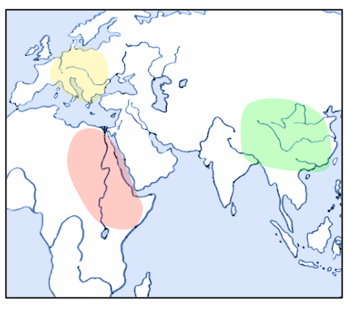

Demographic History
Demographic History
Demographic History
Demographic history is the history of evolution and development of populations. It includes such parameters as size of population, time of splits and migration rates.

Why Reconstruct
Demographic History
?
Understand population history



Why Reconstruct
Demographic History
?
Conservation biology studies

Demographic Inference
Demographic Inference
Demographic Inference
Pipeline

Demographic Inference
Example
$\partial a \partial i$ — Diffusion Approximation for Demographic Inference.
$\partial a \partial i$ uses local search optimization algorithms.
GADMA — Genetic Algorithm for Demographic Model Analysis
- Several simulation engines ($\partial a \partial i$, moments)
- Has common interface
- Effective optimization based on the genetic algorithm
- Handles up to 3 populations
Simulation Engines Evaluation Complexity
Bayesian Optimization
Bayesian Optimization
Goal: minimize unknown function $f$ in as few evaluations as possible.
- Black-box optimization
- Expensive evaluations
On each iteration:
- Approximate objective function $f$ with a surrogate model $M$
- Choose next point as $argmax$ of the acquisition function $\alpha_M$ $$ \htmlClass{fragment}{ x_{n+1} = \argmax_{x\in\c{X}} \alpha_M(x) } $$
Bayesian Optimization
Bayesian Optimization
Bayesian Optimization
Bayesian Optimization
Bayesian Optimization
Bayesian Optimization
Bayesian Optimization
Bayesian Optimization
Bayesian Optimization
Bayesian Optimization
Surrogate model
Gaussian Process
Random Forest
Gaussian Process
Definition. A Gaussian process is random function $f : X \to \R$ such that for any $x_1,..,x_n$, the vector $f(x_1),..,f(x_n)$ is multivariate Gaussian.
Every GP is characterized by a mean $\mu(\.)$ and a kernel $k(\.,\.)$. We have $$ \htmlClass{fragment}{ f(\v{x}) \~ \f{N}(\v{\mu}_{\v{x}},\m{K}_{\v{x}\v{x}}) } $$ where $\v\mu_{\v{x}} = \mu(\v{x})$ and $\m{K}_{\v{x}\v{x}'} = k(\v{x},\v{x}')$.
Matérn Kernels
$$
\htmlData{class=fragment fade-out,fragment-index=9}{
\footnotesize
\mathclap{
k_\nu(x,x') = \sigma^2 \frac{2^{1-\nu}}{\Gamma(\nu)} \del{\sqrt{2\nu} \frac{\norm{x-x'}}{\kappa}}^\nu K_\nu \del{\sqrt{2\nu} \frac{\norm{x-x'}}{\kappa}}
}
}
\htmlData{class=fragment d-print-none,fragment-index=9}{
\footnotesize
\mathclap{
k_\infty(x,x') = \sigma^2 \exp\del{-\frac{\norm{x-x'}^2}{2\kappa^2}}
}
}
$$
$\sigma^2$: variance
$\kappa$: length scale
$\nu$: smoothness
$\nu\to\infty$: recovers squared exponential kernel
$\nu = 1/2$
Exponential
$\nu = 3/2$
Matern32
$\nu = 5/2$
Matern52
$\nu = \infty$
RBF
Acquisition Functions
-
Expected Improvement:
$EI = \mathbb{E}[max\{0, f_{min} - f(x)\}] $
-
Probability of Improvement:
$PI = P(f(x) \leq f_{min})$
-
Lower Confidence Bound:
$LCB = \mu(x) - \kappa \cdot \sigma(x)$
-
Log Expected Improvement:
$logEI = \mathbb{E}[max\{0, e^{f_{min}} - e^{f(x)}\}]$
Cross-Validation for Model Selection
The predictive log probability when leaving out training case $(x_i, y_i)$ is: $$ \htmlClass{fragment}{ \footnotesize \mathclap{ \log p(y_i | X, y_{-i}, \theta) = -\frac{1}{2} \log \sigma_i^2 - \frac{(y_i - \mu_i)^2}{2\sigma^2} - \frac{1}{2}\log 2\pi, } } $$ where $\theta$ - parameters of Gaussian Process, $y_{-i} = Y \setminus \{y_i\}$, $\mu_i = \mu(x_i)$ and $\sigma_i = \sigma(x_i)$
Leave-One-Out log predictive probability: $$ \htmlClass{fragment}{ L_{LOO} = \sum_{i=1}^n \log p(y_i | X, y_{-i}, \theta) } $$
Bayesian Optimization
for Demographic Inference
Datasets
Datasets
Datasets
Cross-Validation
Bayesian Optimization Performance
Bayesian Optimization Performance
Automatic Kernel Selection and Ensembling
Automatic Kernel Selection and Ensembling
Automatic Kernel Selection and Ensembling
Comparison with Genetic Algorithm
Comparison with Genetic Algorithm
Wall Clock Time
Wall Clock Time: 3 Populations
Wall Clock Time: 4 Populations
Wall Clock Time: 5 Populations
Conclusions
and Future Work
Conclusions
- Performance depends on kernel and acquisition function.
-
Leave-one-out cross-validation:
- poor for kernel selection based on large random dataset,
- good for automatic kernel selection at the beginning.
-
Bayesian optimization with automatic kernel choice showed faster convergence than the genetic algorithm for 4 and
5 populations.
Future Work
- Combine Bayesian optimization and genetic algorithm.
- Stop criteria for Bayesian optimization.
- More experiments on real data.
Acknowledgements
Viacheslav
Borovitskiy
Pavel
Dobrynin
Vladimir
Ulyantsev
Thank you!